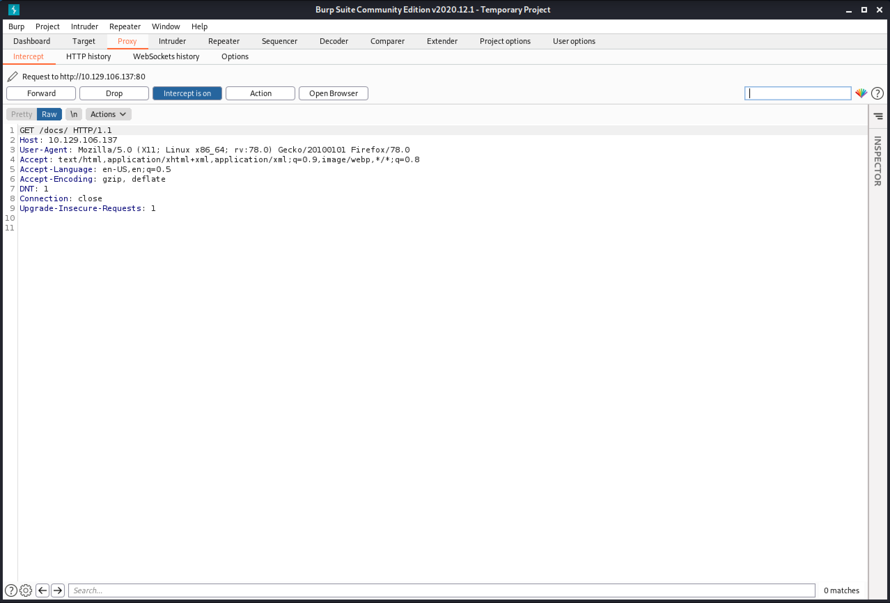
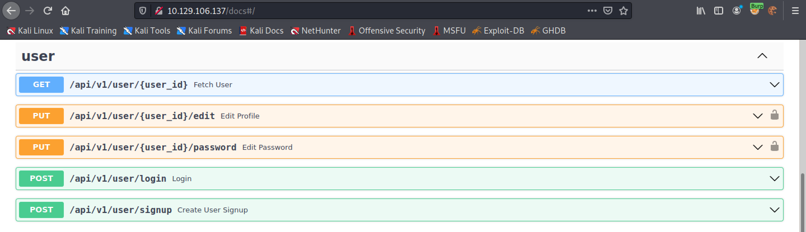
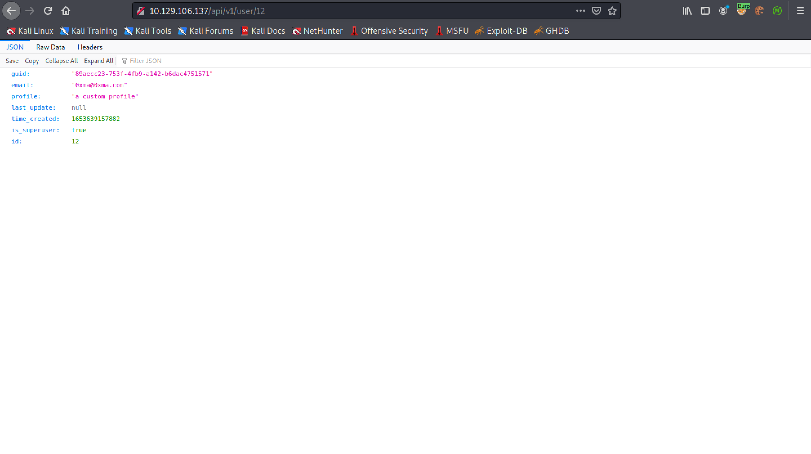

June 24, 2022
Mass Assignment Vulnerability
In this tutorial, we will see how to perform a mass assignment vulnerability attack. The API on the website takes JSON input. We can change settings like email address, profile, etc. But the API also allows us to change our privilege level.
Let's start by creating an account on the web application API.

Now that we have created an account, we can login and get an access token.
The documentation for the API is in "http://10.129.106.137/docs/". I try to access that page and capture the request in Burp Intercept.
Since the documentation page requires us to be authenticated, it is important to add the "Authorization" header with the access token that we got from the API.
It is important to add this header to all the subsequent requests that are sent to the API.
This shows the API's documentation page. From here we can view and change user settings.
Trying to access the user's settings displays this page. It has the following fields: guid, email, profile, last_update, time_created, is_superuser and id.
The user section allows us to fetch user data, edit the user's profile, edit the user's password, login and signup.
Since the user profile was empty, let's try to add something to it.
We can see that the profile is updated.

Let's see if we can update the email address as well.
The email address has been updated.
The next step is to see if we can update the user's privileges.
We can see that the 'is_superuser' setting is set to true. We have successfully been able to elevate our privileges.
If you liked reading this article, you can follow me on Twitter: mujtabareads.
- Perform Directory Traversal by Bypassing Filters
- Identify Vulnerable Processes Through LFI
- Brute-Force Pins Using wfuzz
- SQL Injection - Example 5
- PHP Type Juggling
- Server Side Template Injection - Example 3
- Server Side Template Injection - Example 2
- Server Side Template Injection - Example 1
- Local File Inclusion (LFI) Attack - Example 1
- SQL Injection - Example 4